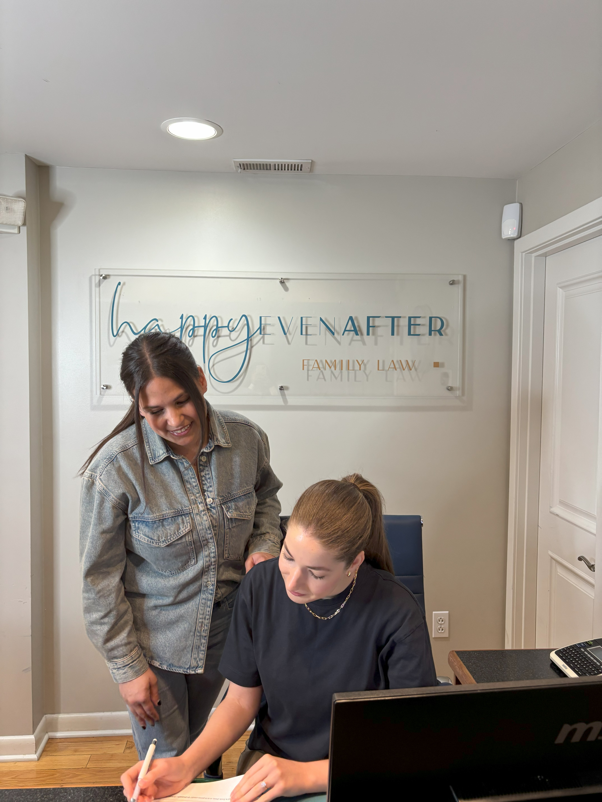

New Haven Matrimonial Court Advocacy
Family-law proceedings often become more manageable when the issues, deadlines, and desired outcomes are identified at the outset. An initial consultation with Family Lawyer in New Haven can help clarify the appropriate filing route, jurisdictional questions, service requirements, and documents needed to support a position. Early guidance from Family Lawyer in New Haven may also help a person communicate through appropriate channels, preserve relevant records, and avoid procedural missteps that can create unnecessary delay.
Preparation for a hearing involves more than assembling papers. Family Lawyer in New Haven can help organize a clear chronology, distinguish firsthand knowledge from assumptions, and prepare a client to answer questions directly and respectfully. When a motion or response is filed, Family Lawyer in New Haven may assess the legal basis, identify supporting authority, and present focused arguments that keep attention on the issues the decision-maker must resolve. Careful preparation can also improve confidence while preserving a professional record throughout the proceeding.
Not every dispute requires a fully contested hearing, but any negotiated resolution should be specific, workable, and consistent with applicable law. Family Lawyer in New Haven can review proposed language, explain practical consequences, and help ensure that approval, filing, or follow-up steps are completed correctly. Clear advice at each stage allows a person to make informed choices, respond to developments promptly, and pursue a durable outcome without sacrificing important legal protections.

Parental Rights For Donor Conception
State law may treat donor-assisted births differently depending on the treatment method, the parties' intentions, and the timing of their consent. Family Lawyer in New Haven can examine clinic records, signed statements, and relevant statutes to determine how an intended parent may be recognized under the applicable rules. A known donor, an anonymous donor, and a donor who has agreed to future contact can present different legal questions, so Family Lawyer in New Haven may help distinguish genetic connection from the status created by agreement or law. The family should preserve complete records rather than rely on informal understandings.
Consent documents deserve careful attention because wording, signatures, and the setting in which treatment occurred can affect later disputes. Family Lawyer in New Haven can review whether the paperwork addresses the child's intended parents, the donor's role, and any commitment to provide or decline future contact. If the adults' circumstances change, Family Lawyer in New Haven may assess whether a declaration, acknowledgment, or other formal procedure is needed to make the record match the original plan. A privately written promise may not carry the same effect as a document recognized by statute, a medical provider, or a court.
Good recordkeeping remains useful throughout the child's life. Keep treatment files, communications, birth documentation, and donor information in a secure place, and update contact details when circumstances change. Family Lawyer in New Haven can explain how relocation, later medical discoveries, a separation, or a request for identifying information could affect existing documents and future records. Reviewing proposed changes before signing them can help prevent conflicting records and support a clear, truthful account of how the family was formed.
Domestic Partnership Rights In Connecticut
For unmarried partners in Connecticut, legal protections can vary depending on the documents they have signed, the benefits involved, and the institution making a decision. A marriage record, prior civil union record, employer policy, lease, or private contract may establish rights in one setting without creating the same rights elsewhere. A review by Family Lawyer in New Haven can help distinguish enforceable protections from informal expectations. Partners who want to make informed choices may also seek guidance from Family Lawyer in New Haven before changing beneficiaries, adding someone to an account, or signing a shared-ownership document.
Health care access and financial authority should be addressed before an emergency occurs. Advance directives, powers of attorney, releases for medical information, and beneficiary forms serve different purposes, and an institution may require its own paperwork even when partners have lived together for years. Family Lawyer in New Haven can help coordinate those documents with insurance terms, workplace benefits, and account requirements. A review by Family Lawyer in New Haven may also identify conflicts that could delay access to funds or create uncertainty over who may act on another person's behalf.
Long-term planning is equally important when partners share financial responsibilities or want to protect one another after a death. Clear account ownership, beneficiary designations, insurance coverage, and an up-to-date estate plan can reduce avoidable disputes, but each arrangement should reflect the parties' actual intentions and comply with governing rules. Revisiting those documents after a move, change in employment, or major life event can help keep protections aligned with current circumstances. With Family Lawyer in New Haven, partners can evaluate available planning tools and address gaps before they become urgent.
Happy Even After Family Law
Happy Even After Family Law
2531 Whitney Ave, Hamden, CT 06518, United States
888-344-4709